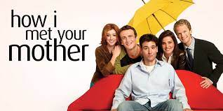

Merhaba, ben Ayşe. Yıldız Teknik Üniversitesi Harita Mühendisliği Mezunuyum. Aynı üniversitede CBS alanınında yüksek lisans yapıyorum.
Lisans dönemim boyunca Phyton üzerinden birçok proje yaptım. Front-end Web Development alanından kendimi geliştirmek istiyorum. Yüksek
Lisans ve İş hayatından fırsat buldukca bu alanda kendimi geliştimeyi amaçlıyorum. Boş zamanlarımda istanbulu gezmeyi çok seviyorum. Kitap
okumak ve Film izlemek hobilerim arasındadır.
How I Met Yout Mother
